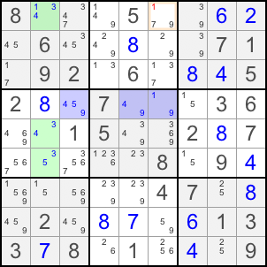

返回课程目录
Almost Locked Set （ALS）是同一单元中 N 个格子含有 N+1 种候选数字的集合；它比 Locked Set 多一个候选。
两个 ALS 的受限共同候选是不能同时出现在两个 ALS 中的共同候选。因此，如果该数字在其中一个 ALS 成立，另一个 ALS 就会变为 Locked Set 。
解题时寻找具有受限共同候选的两个 ALS，再寻找另一共同候选：若某个外部格子同时看见两个 ALS 中所有含这一候选的格子，就可以从该外部格删除它。
下图中绿色和蓝色格子分别组成一个 ALS，5 是受限共同候选。候选 1 位于绿色 ALS 的 R1C2 和蓝色 ALS 的 R4C6；R1C6 同时看见两者，因此可从 R1C6 删除 1。

如果 R1C2 为 1，R1C6 不能为 1；如果绿色 ALS 不含 1，它就锁定为 3、4、5，并迫使蓝色 ALS 锁定为 1、4、9，进而 R4C6 为 1，R1C6 仍不能为 1。
返回课程目录